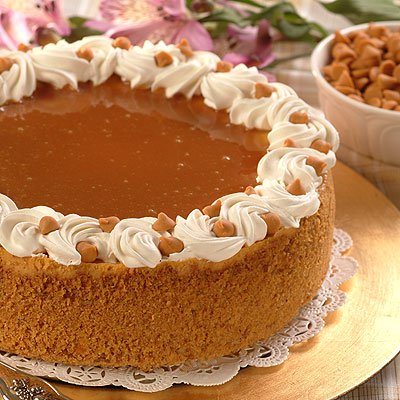

Butterscotch Cheesecake

Descritpion
A rich dessert. My dad's favorite recipe for special occasions.
Ingredients
- 2 cups finely crushed graham cracker crumbs
- 1/3 cup melted butter
- 3/4 cup sugar
- 1 2/3 cups butterscotch chips
- 4 packages room temperature cream cheese
- 1 can sweetened condensed milk
- 1/4 cup all purpose flour
- 2 teaspoons vanilla extract
- 4 large egs slightly beaten
- 1/4 cup caramel ice cream topping
- whipped topping
Directions
- preheat oven to 325F degrees
- wrap outside bottom and side of 9 inch springform pan in heavy duty foil
- combine graham cracker crumbs, butter and 1/4 cup sugar in medium bowl and press into bottom and side of springform pan
- set aside 2 tablespoons of butterscotch chips
- heat milk and remaining butterscotch chips in saucepan over low heat until chips are melted then remove from heat and cool to room temperature
- beat cream cheese, remaining sugar, flour and vanilla extract until combined
- add butterscotch mixture and beat until smooth
- add eggs and beat until just combined
- pour mixture into prepared pan
- add pan of water to oven or cups of water on each side of springform pan while in oven
- bake for 1 1/4 to 1 1/2 hours or until 2 inch area around outside edge appears set when gently shaken
- cool slowly over several hours
- cover and refrigerate overnight
- spread caramel topping over top of cheesecake and decorate with whipped topping and remaining butterscotch chips